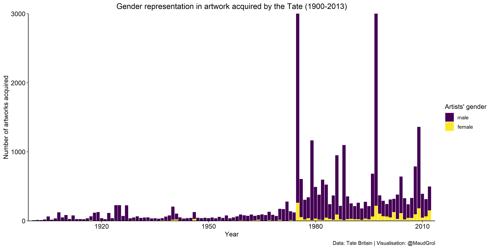
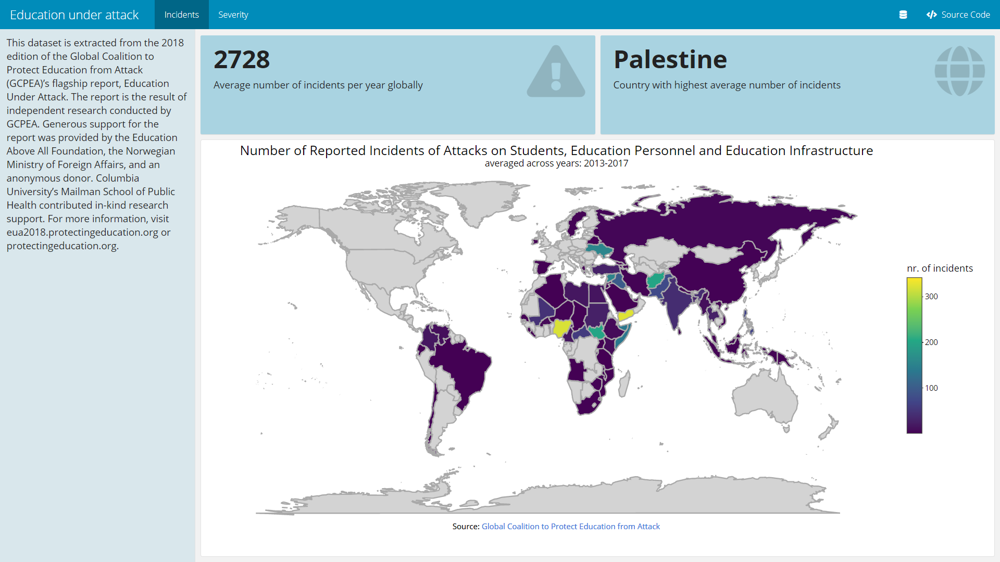

My new year’s resolution for 2021 was to invest more time in playing around with data visualization techniques. Here you find a sample of data visualizations that I have produced for personal projects. Stay tuned for more to come!
TidyTuesday
TidyTuesday is a weekly data project for individuals to practice their wrangling and data visualization skills. Every week a real-world dataset is posted, and people are invited to explore the data. Click the image below to view my contributions in my TidyTuesday github repository.

Education Under Attack
This data dashboard was created using a dataset that I accessed through the Humanitarian Data Exchange, which was originally extracted from the 2018 report of the Global Coalition to Protect Education from Attack. For more information, visit Education under Attack 2018.
